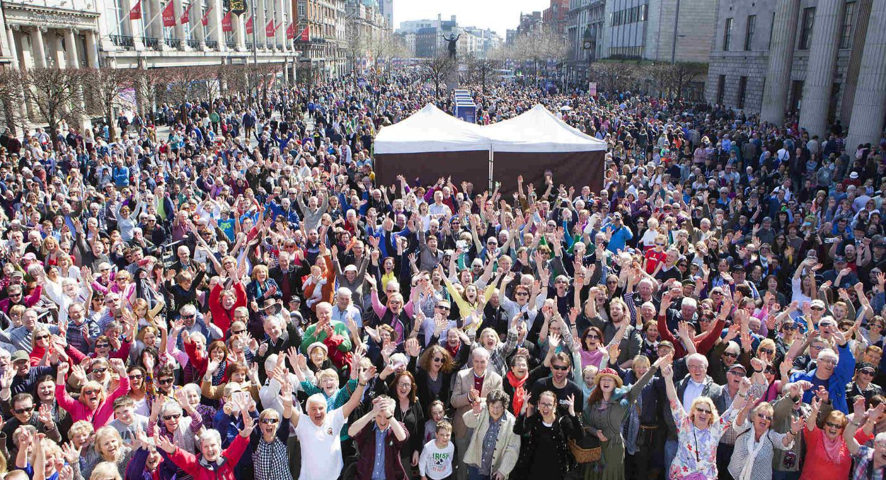
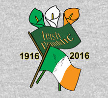

1916 Easter Rising Centenary
Home
About
Iconic People
Rising Locations
Events
Page Creator
What's Happening this April?
Below are the list of events taking place during the Centenary period..

Start of Centenary Events:
1st April 2016
End of Centenary Events:
30th April 2016
The plough and the stars: 09.03.16 - 23.04.16
Voices of the Rising: 01.04.16 - 30.04.2016
Imagining Home: The Literary Imagination, 01.04.16
Imagining Home: This is Ireland, 02.04.16
Imagining Home: Out of the Tradition, 03.04.16
Interfaith Service, Glasnevin Cemetery, 03.04.16
Maloney's Dream, 06.04.16 - 09.04.16
Easter 1916 - 2016: 18th Anniversary of the Good Friday Agreement, 10.04.16
Kevin Barry Room at the National Concert Hall, 11.04.16
Liam Mellows Cup, 12.04.16
When the Dawn is Come, 14.04.16 - 04.06.16
Valentia Island Ring Brothers Commemoration, 17.04.16
Irish Culture in Britain: A Centenary Celebration, 19.04.16 - 24.04.16
A Girl is a Half-Formed Thing, New York, 20.04.16 - 01.05.16
Commemorative Event for Sir Roger Casement, 21.04.16
Dramatising Women's Lives: Two Monologues, 21.04.16
Celebrating Multilingualism in Ireland 2016, 22.04.16 - 23.04.16
'The Aud' Commemorative Weekend in Crosshaven, 22.04.16 - 24.04.16
The Role of Women in the Cultural Revolution, 23.04.16
Walk of the Maynooth Volunteers to the GPO in 1916, 23.04.16
Laochra - The GAA Commemorates 1916, 24.04.16
Arbour Hill Commemorative Event, 24.04.16
Thomas Traynor Commemoration and Exhibition, 24.04.16
Imagining Ireland, 29.04.16
Thomas MacDonagh Summer School, 30.04.16 - 01.05.16
